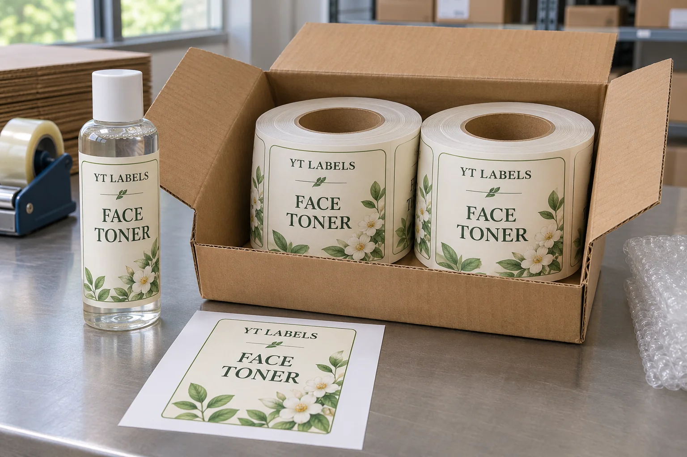
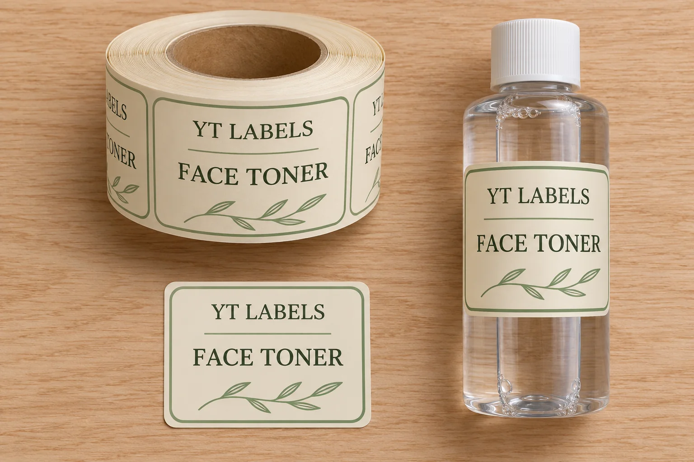

Use a pre-dispatch check when its findings can change what you authorize the printer to ship. Decide whether an identified supplier record is enough for that choice or whether you need an independent inspection with access to the actual finished lot. Agree who will review the findings and what should hold shipment before someone books the pickup.
Receiving inspection answers whether delivered stock can enter your operation. A pre-dispatch inspection answers an earlier question, while the goods are still at the supplier. The two stages can cover different risks. Keep receipt checks for transport damage and identity even when a defined dispatch review is completed.

Write the finding that would change the shipment decision
Describe the actual order and concern. Does the buyer need evidence that the intended revision is packed, that the accepted finish is present, or that particular roll references correspond to the packing list? Name the requirement against which the comparison can be made. A photo of a neat carton is hard to act on without the order, artwork or lot reference.
For a familiar repeat with an accepted construction and available production evidence, the buyer may choose a documented supplier check against named references. Request the actual report fields and scope. A formal external visit adds little if the question can be answered by the existing records and the receiving site can resolve any remaining issues.
When the buyer needs a separate observer and the lot can be accessed before departure, look at an inspection provider's actual scope. QIMA describes independent product inspection at several production stages, including before shipment, with findings against agreed checks. Confirm what the provider can review for printed label rolls, what access it needs and the form of its report. General inspection availability does not establish that a particular label measurement is covered.
Use a dispatch review brief before booking collection
| Field | Start with | Close before the dispatch decision |
|---|---|---|
| Lot and timing | Order, revision, lot, quantities, packing state and planned departure. | Which stock will be ready and accessible before release. |
| Inspection reference | Accepted proof, physical reference, order specification and packing list. | Which exact reference applies to each check and who supplies it. |
| Method and report | Required observations, agreed sampling scope and any equipment or access requirement. | Whether a supplier record or external visit can cover each decision and what remains unreviewed. |
| Release authority | Buyer contact, report deadline and handling of affected stock. | Who can release part or all of the lot, hold it or request a follow-up. |
Start with the intended inspection reference, not a default inspection percentage. Select a scope with the responsible quality parties. Decide which requested measurements are feasible where the rolls sit. If a property requires a separate laboratory or application trial, assign it there and record that the dispatch report will not cover it. Use the incoming sampling guide for the separate acceptance decision at receipt.

Keep the report connected to the goods actually shipped
A hypothetical order contains four lotion label versions. One revision was changed shortly before production. Before booking collection, the buyer can ask for revision and carton identification for all four lines. If the supplier can provide a traceable record that answers the concern, the buyer may accept it. If the intended check needs independent observation of the packed lot, the site and inspector should agree access and the specific item to verify.
If a report identifies a problem, isolate the scope by roll or carton where the information supports it. Ask the supplier how it proposes to handle that stock. Obtain a new release decision when the lot, quantities or packing change. Keep the updated packing identification attached to the report and the actual dispatch.
Hold the affected dispatch when the inspection cannot identify its reference, a known concern remains open, or the buyer has yet to authorize release. At delivery, use the roll packing guide to review what happened in transit and preserve the receiving record.
Include dispatch evidence in the label brief
Send the intended roll specification, revision, quantity by design, destination and the records your buyer needs before dispatch. Ask what the supplier can provide and identify any independently arranged inspection separately. The form prepares a message. Send supporting records by email or WhatsApp.
Prepare a dispatch evidence inquiry